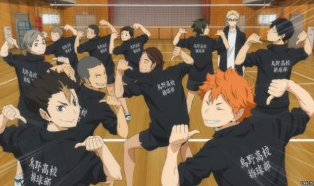
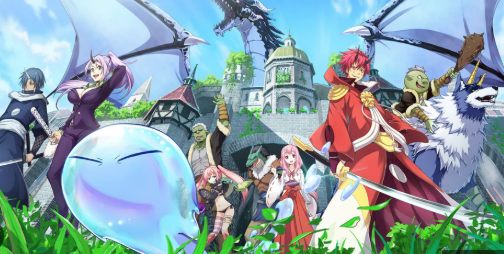
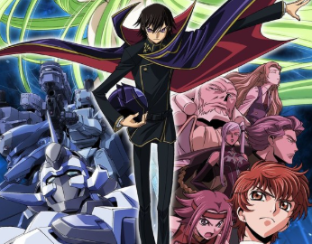

Haikyuu
It is a sports anime revolving around about Shoyo Hinata's journey and love on the sport of volleyball.
That time I got reincarnated as slime
The story follows about Satoru Mikami who got reincarnated on another world after being murdered by unknown man. Satoru reincarnated as slime and embark on journey where he met his allies to build their own nation of monsters.
Code Geass
The story about the exiled prince Lelouch Lamperouge who got the "power of absolute obedience" from woman named C.C. With his new found power, also known as Geass, he led a resistance movement against the rule of Holy Britain Empire.
